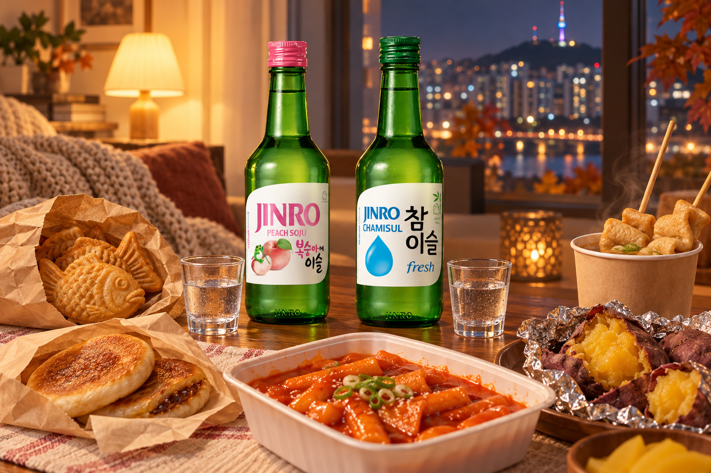
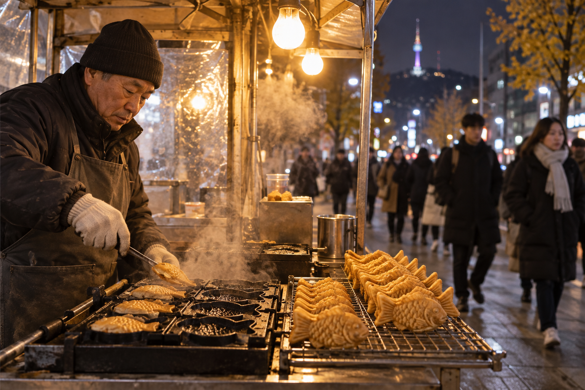
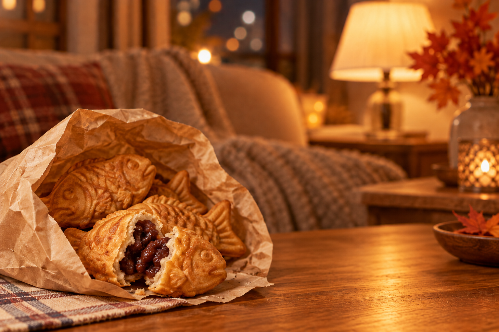
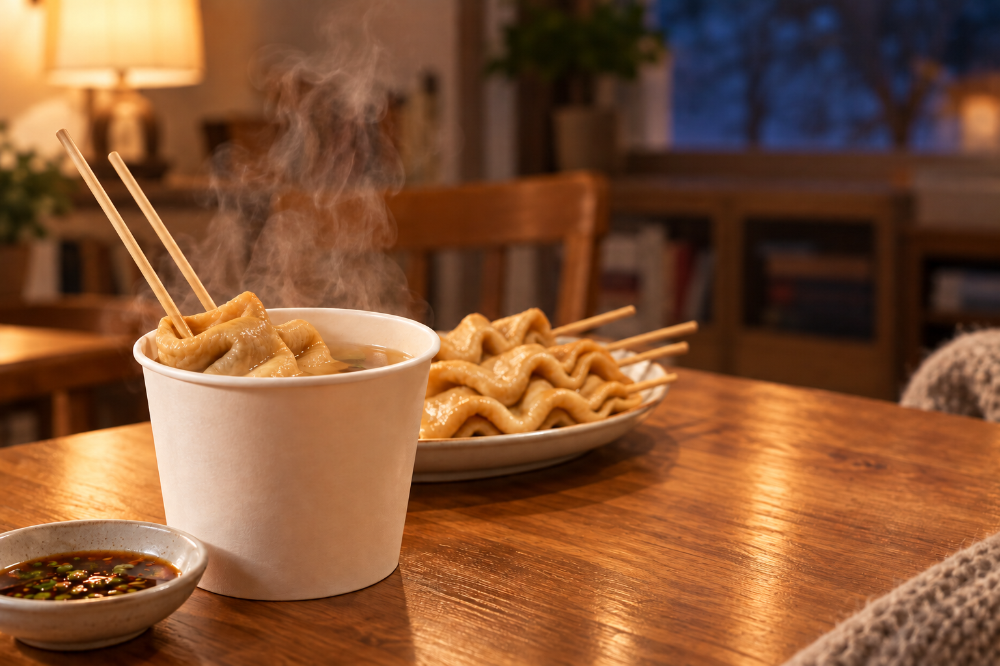
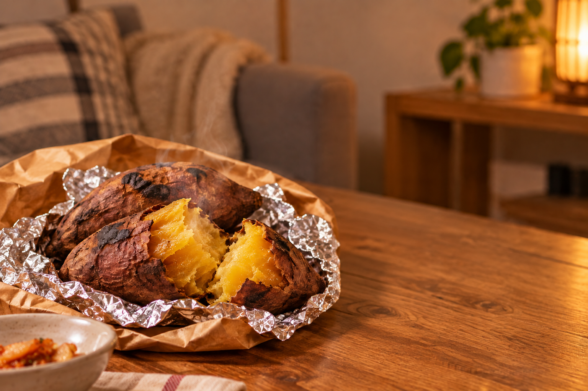
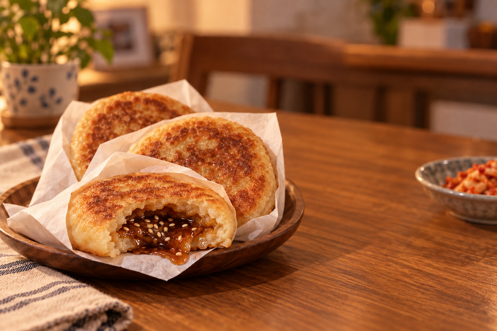
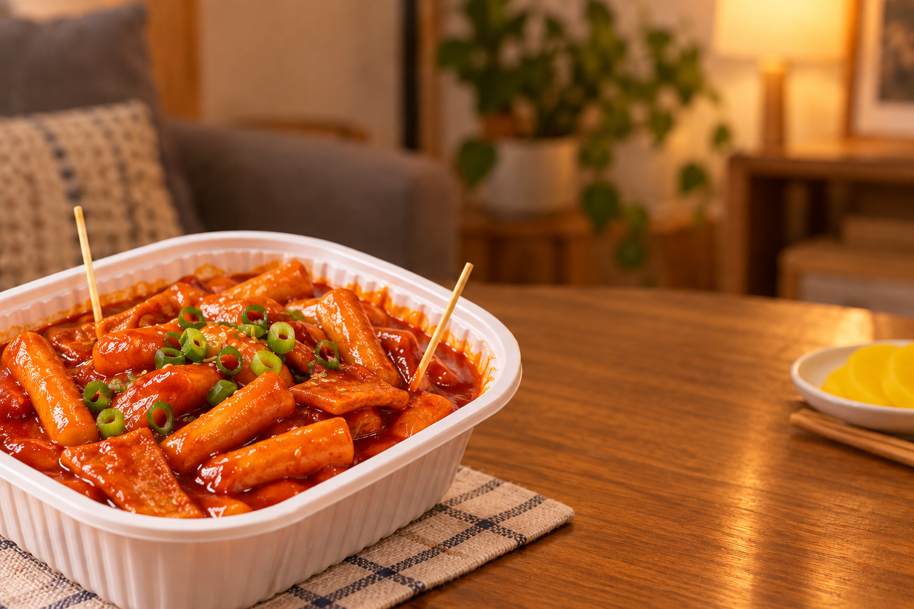
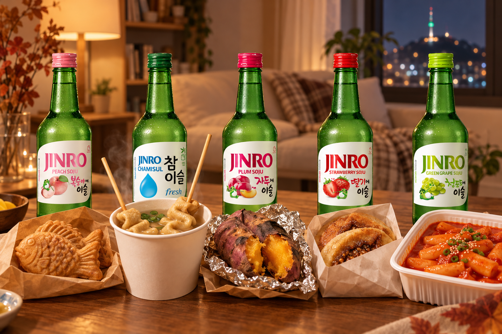

When Seoul Gets Cold: 5 Cold-Weather Street Foods Koreans Crave
From bungeoppang hunting to roasted sweet potatoes, discover five street snacks that show up when Seoul turns chilly, with JINRO pairings to match.
In Seoul, the first truly cold week of the year starts a kind of treasure hunt. The target: a small street cart selling warm, fish-shaped pastries.
Koreans even have a word for living close to one. Bungsegwon is a play on yeoksegwon, the term for a home near a subway station, and it means your neighborhood has a bungeoppang stall within easy reach.
The hunt has gone digital, too. Each winter, Karrot, a popular Korean neighborhood app, opens a crowdsourced bungeoppang map where users pin nearby stalls and share quick reviews. Last season, the map focused only on bungeoppang because searches for it stood out from other winter snacks.
Bungeoppang is only the start. Here are five cold-weather street snacks to look for, plus a JINRO to pair with each when you bring them home.

How the Bungeoppang Hunt Works
Bungeoppang carts tend to appear when the weather turns cold, and they can be surprisingly hard to find. That is why people share locations with each other.
If you visit Seoul in the colder months, check a map app before heading out. Some small stalls take only cash or bank transfers, so it helps to carry a little cash.

1. Bungeoppang: The Fish-Shaped Favorite
Crisp on the outside and soft inside, this fish-shaped pastry is the face of winter street food in Korea.
The classic filling is sweet red bean paste, and custard is the other favorite. Fans of each even have nicknames: patbung for red bean and shubung for custard. Some stalls now offer cheese or pizza fillings, too.
Not sure which side you are on? Order one of each and decide for yourself.

2. Eomuk: Fish Cake Skewers in Warm Broth
Fish cake skewers simmered in a light broth are a cold-weather staple. At many stalls, you can also pour yourself a cup of the warm broth.
Take a sip of the broth first, then try the fish cake. It is a simple snack that warms you up quickly.

3. Goguma: Roasted Sweet Potatoes
Often roasted in drum-shaped ovens on the street, goguma is one of the simplest winter snacks. The skin chars a little while the inside turns soft and sweet.
Split one open while it is still warm and eat it straight from the skin.

4. Hotteok: A Pancake with a Sweet Center
Hotteok is a pan-fried pancake filled with brown sugar, cinnamon and often chopped nuts or seeds. The filling melts into a hot syrup, so take your first bite carefully.
Many stalls serve it folded in a paper cup or sleeve, which makes it easy to eat on the go.

5. Tteokbokki: Sweet, Spicy and Chewy
Chewy rice cakes in a sweet and spicy gochujang sauce are a favorite in any season, but a hot container of tteokbokki feels especially good on a cold night.
Add a fish cake or two from the same stall, and you have a quick meal.

Match Your Snacks with JINRO
These snacks range from sweet to savory to spicy, so each one goes well with a different flavor. If you would like to pair them with JINRO, choose one to match your snack and serve it chilled.
Bungeoppang × JINRO Peach
The peach flavor of JINRO Peach goes well with the sweetness of red bean paste.
Eomuk × JINRO Chamisul Fresh
JINRO Chamisul Fresh has a clean, smooth character that suits the mild, savory broth.
Goguma × JINRO Plum
The sweet and tangy flavor of JINRO Plum balances the deep sweetness of roasted sweet potato.
Hotteok × JINRO Strawberry
The bright fruit flavor of JINRO Strawberry adds a fresh contrast to the cinnamon syrup.
Tteokbokki × JINRO Green Grape
JINRO Green Grape brings a refreshing fruit note to the spicy-sweet sauce.

Start Your Own Snack Hunt
You do not have to be in Seoul to try this. Korean markets and snack shops in many cities sell hotteok, tteokbokki or fish-shaped pastries, especially once the weather cools down.
Pick up one or two snacks on your way home and try a new combination. Sometimes, a cold evening is all it takes to find a new favorite.
To discover more Korean food stories and JINRO pairings, visit JINRO Global’s official Instagram, Facebook, and YouTube.
This article is intended for readers of legal drinking age. Please enjoy JINRO responsibly and in moderation, and never drink and drive.